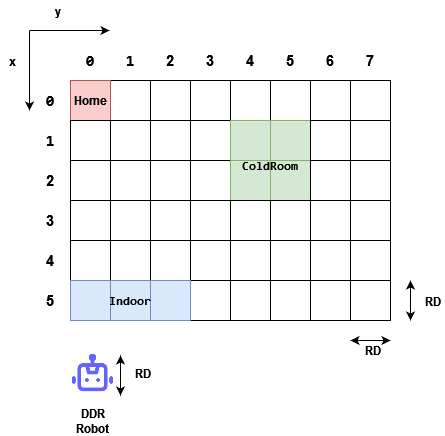

<!DOCTYPE html PUBLIC "-//W3C//DTD HTML 4.01//EN" "http://www.w3.org/TR/html4/strict.dtd">
<html>
<!--
<script type="text/javascript" src="../css/issStyle.js"></script>
-->
<link rel="stylesheet" type="text/css" href="resources/css/sprint0.css">

<head>

    <title>Sprint1</title></head>

<body>
<!--
<div id="top">
    <h1><b>PROGETTO DI INGEGNERIA DEI SISTEMI SOFTWARE</b> - SPRINT 0 <font size="5"></font></h1>
    <h3>Gruppo di lavoro: Focardi, Galeone, Porrazzo <font size="3"></font></h3>
</div>
-->
<div class="body">
    <h2>Introduction</h2>
    <div class="remark"> Progetto finale di ISS, finalizzato allo sviluppo software di un magazzino refrigerato, nel
        quale
        vi &egrave; un robot che ha il compito di trasportare del cibo da un punto di partenza - chiamato INDOOR - alla cella
        frigorifera.
    </div>

    <h2>Requirements</h2>
    <div class="remark">
        <a href="https://htmlpreview.github.io/?https://github.com/anatali/issLab23/blob/main/iss23Material/html/TemaFinale23.html">Tema Finale </a>
    </div>

    <h3>Work plan</h3>
    <div class="remark">
        <ul>
            <li>A partire dallo sprint0 analizzare il core business dell'applicazione</li>
            <li>Trovare ad analizzare eventuali criticit&agrave; dei requisiti</li>
            <li>Implementare un simulatore del truck, in modo da simulare un interazione del driver con la <b>ServiceAccessGui</b>, che interagisca con il <b>ColdStorageService</b></li>
            <li>Implementare il <b>ColdStorageService</b></li>
            <li>Implementare il <b>TrasportTrolley</b> e interfacciarlo con il <b>BasicRobot</b></li>
            <li>Testing del sistema</li>
            <li>Aggregare le varie componenti in modo da creare un primo prototipo del sistema</li>
        </ul>
    </div>

    <h2>Problem analysis</h2>
    <div class="remark">
        <h3>TransportTrolley e BasicRobot</h3>
        <h6>Obiettivo</h6>
        Sviluppare un attore che implementi il TransportTrolley e le sue interazioni col BasicRobot, in modo che:
        <br/>
        <ul>
            <li>Esegua delle <ks>Azioni di deposito</ks>, consistente nel:</li>
             <ol>
                 <li>
                    Prelevare (<k>PICKUP</k>) il carico di cibo dal <ks>Food truck</ks> arrivato
                    nella posizione <k>INDOOR</k>
                 </li>
                 <li>
                     Andare dalla posizione <k>INDOOR</k> alla porta della
                     <ks>COLDROOM</ks>
                 </li>
                 <li>
                     Depositare il carico nella <ks>COLDROOM</ks>
                 </li>

             </ol>
            <li>Sia in grado di mandare comandi al <b>BasicRobot</b> e gestire
            le eventuali risposte</li>
        </ul>
        <h6>Muovere il robot verso una destinazione</h6>

        <h4>Orientamento nell'ambiente</h4>
        Dai requisiti si evince che le dimensioni della stanza siano
        note, cos&igrave; come le posizioni dei punti di interesse
        ( <k>HOME</k>, <k>INDOOR</k> e <k>PORT</k>) e altri valori costanti.
        Per far s&igrave; che il sistema sia a conoscenza di tali informazioni,
        sarebbe utile avere un modo per configurarlo.
        <br/><br/>
        Sono possibili due approcci:
        <ul>
            <li>Cablare i valori nel codice </li>
            <li>Usare un file di configurazione</li>
        </ul>
        Visto che il software deve poter essere usato correttamente indipendentemente
        dalle dimensioni e locazioni dei suddetti punti di interesse, si scarta la prima
        soluzione poich&eacute; dal momento in cui uno di tali valori dovesse cambiare,
        si dovrebbe cambiare il codice ed effettuare un <i>rebuild</i> dell'applicazione.
        Dunque l'uso di un <ks>file di configurazione</ks>, che pu&ograve; essere facilmente
        modificato senza richiedere cambiamenti di codice, risulta pi&ugrave; adatto.
        Il file di configurazione &egrave;
        <a href="./resources/json/coldServiceSystemConfig.json">coldServiceSystemConfig.json</a>

        <pre>
{
    "LOCATION":{
        "HOME":...,
        "INDOOR":...,
        "PORT":...
    }
    "MAXW":...,
    "DLIMIT":...
}
        </pre>

        Da qui si evince una nuova problematica: come rappresentare la posizione
        dei punti d'interesse ( <k>HOME</k>, <k>INDOOR</k> e <k>PORT</k>) e del robot.
        <br/><br/>
        &Egrave; possibile usare uno di questi approcci:
        <ul>
            <li>Usare un sistema di coordinate cartesiane X e Y</li>
            <li>Usare gli elementi strutturali della <kc>Service Area</kc>
            (pareti o ostacoli) come punti di riferimento</li>
        </ul>
        <ks>Coordinate Cartesiane</ks>
        <br/><br/>
        L'uso di tali coordinate impone la necessit&agrave; di scegliere un'unit&agrave; di misura in
        modo da mappare opportunamente la <i>Service Area</i>. Per fare ci&ograve; si pu&ograve; usare
        il DDR robot come unit&agrave; e mappare la <i>Service Area</i> come una griglia composta da
        celle di dimensione <kc>RD</kc> (la dimensione del DDR robot).
        
        <br/><br/>
        I luoghi di interesse verranno rappresentati da una coppia di valori <b>(X,Y)</b>
        <pre>
(0,0) inica la cella home
(X,Y) indica la cella che si trova X celle sotto HOME e Y celle alla sua destra
        </pre>
        <i>Vantaggi e svantaggi</i>
        <br/><br/>
        <pro>+</pro> Possibilit&agrave; di riuso di software gi&agrave; sviluppato per mappare, identificare il
        percorso ed eseguire il path trovato ( )
<!--        TODO: Inserire link a progetti-->
        <br/><br/>
        <cons>-</cons> Potrebbe essere necessario effettuare degli aggiustamenti in quanto le dimensioni della
        stanza potrebbero essere multiple di RD.
        <br/>
        <cons>-</cons> La stanza deve essere mappata
        <br/><br/>
        <ks>Punti di riferimento</ks>
        Tale soluzione si basa sul <kc>BoundaryWalker</kc>, un robot capace di muoversi lungo il perimetro
        di una stanza delimitata da pareti, sfruttando le collisioni con le pareti per capire quando fare
        una rotazione. Sapendo che alcuni punti di interesse si trovano agli angoli delle pareti si potrebbe
        sfruttare il sonar montato sul DDR robot per rilevare la collisione con le pareti in modo da comprendere
        se si &egrave; raggiunto un dato punto di interesse.
        <br/><br/>
        <i>Vantaggi e svantaggi</i>
        <br/><br/>
        <pro>+</pro> Minor complessit&agrave; del caso precedente.
        <br/>
        <pro>+</pro> Non necessita l'uso di software esterno, a differenza del caso precedente.
        <br/><br/>
        <cons>-</cons> Essendo non tutti i punti di interesse sul bordo della stanza, tale soluzione potrebbe
        non avere successo, con un eventuale lavoro in pi&ugrave; mirato allo sviluppo di un robot in grado
        di rilevare anche la posizione di tali punti.
        <br/>
        <cons>-</cons> Il codice deve prevedere tutti i percorsi che il robot pu&ograve; effettuare, eventualmente
        anche non sul bordo per trovare gli altri punti di interesse.
        <br/>
        <cons>-</cons> Software poco riusabile
        <br/><br/>
        <b>Conclusione</b>
        <br/><br/>
        Si consiglia di usare il sistema di coordinate cartesiane, poich&egrave; riusabile anche per <kc>Service Area</kc>
        differenti e permette di usare software gi&agrave; sviluppato per mappare, pianificare ed eseguire il percorso.
        <br/>
        Il file di configurazione avr&agrave; informazioni del tipo:
        <pre>
{
    "LOCATION":{
        "HOME":[0,0],
        "INDOOR":[4,1],
        "PORT":[2,2]
    }
    "MAXW":100,
    "DLIMIT":50
}        </pre>
        <h4>Path finding</h4>
        Avendo deciso come orientarsi nella stanza e come individuare i punti di interesse, ci possiamo occupare
        di come comprendere quale percorso si debba scegliere per arrivare in un dato punto di interesse.
        <br/>
        Anche qui sono possibili vari approcci:
        <ul>
            <li>Muoversi in linea retta</li>
            <li>Muoversi usando una sequenza di mosse</li>
        </ul>

        <ks>Linea Retta</ks>
        Tale soluzione prevede di muovere il roboto lungo una linea retta che collega il punto di partenza
        con quello di arrivo <br/> <br/>
        
        <br/> <br/>
        Il problema relativo a tale soluzione &egrave; che il DDR robot si muove su se stesso di
        90&ordm;( <!-- TODO: link -->). Per tale motivo il roboto non riesce a muoversi su una linea
        a diversa angolazione (non linea retta). Un possibile percorso sarebbe il seguente.
        
        <br/> <br/>
        Per eseguire un percorso diretto si dovrebbe modificare il <kc>basicrobot23</kc> in modo da accettare
        angolature diverse.
        <br/><br/>
        <i>Vantaggi e svantaggi</i>
        <br/><br/>
        <pro>+</pro> Percorso pi&ugrave; se si riuscisse a modificare il basicrobot23
        <br/><br/>
        <cons>-</cons> Dover apportare modifiche al basicrobot23
        <cons>-</cons> Impossibili&agrave; di uso di software gi&agrave; sviluppato per pianificare ed eseguire il percorso
        <br/>
        <ks>Muoversi usando una sequenza di mosse</ks>
        Tale soluzione si basa su come il robot &egrave; in grado di muoversi e basa la soluzione su tale modalit&agrave;
        <br/> <br/>
        
        <br/><br/>
        <i>Vantaggi e svantaggi</i>
        <br/><br/>
        <pro>+</pro> Si possono usare i componenti software a disposizione per pianificare un percorso partendo
        dalle coordinate cartesiane della destinazione ed eseguirlo.
        <br/>
        <pro>+</pro> Non si hanno vincoli su dove si devono trovare i punti di interesse
        <br/><br/>
        <cons>-</cons> I percorsi potrebbero essere pi&ugrave; lunghi rispetto al caso precedente
        <br/><br/>
        <b>Conclusione</b>
        Considerando ci&ograve; detto finora, si decide di usare la soluzione che prevede di muoversi
        mediante una sequenza di mosse perch&egrave; consente di usare il software esistente per pianificare
        ed eseguire il percorso abbattendo i tempi di sviluppo.
        <br/><br/>
        Per quanto riguarda il <kc>pathexecutor</kc> esso &egrave; modellato come un attore, utilizzando il linguaggio QAk,
        che riceve una richiesta di eseguire un percorso e risponde con un messaggio di conferma una volta completato
        il percorso o con una risposta di fallimento in caso contrario, specificando la parte di percorso non eseguita. Il codice QAk del pathexecutor &egrave; consultabile qui
<!--        TODO: link-->
        <pre>
Request dopath: dopath(PATH)
Reply dopathdone: dopathdone(ARG)
Reply dopathfail: dopathfail(PATHSTILLTODO)
        </pre>
        L'uso dell'attore pathexecutor modifica l'architettura logica, questo si trova nel contesto del
        basicrobot:
<!--        TODO: immagine-->
        <br/>
        Per quanto riguarda il <kc>planner23</kc> questo permette di calcolare il percorso da fare per
        arrivare in un punto individuato dalle coordinate (X,Y). Il suo utilizzo &egrave; semplice: ad esempio
        per arrivare in (2,4):
        <pre>
val planner = new planner23Util()
planner.initAI()
planner.setGoal(2,4)
planner.doPlan()
        </pre>
        <h4>Gestione delle azioni di deposito e movimento</h4>
        Bisogna a questo punto comprendere quale componente del sistema debba essere il responsabile delle operazioni di deposito e movimento.
        Tali operazioni devono essere responsabilit&agrave; del <kc>ColdStorageServiceService</kc>, del <kc>transportTrolley</kc> o sarebbe opportuno
        dividere le responsabilit&agrave; tra i due attori? <br/><br/>
        Risulta evidente assegnare al <i>ColdStorageServiceService</i> la responsabilit&agrave; delle operazioni di deposito, in quanto esso &egrave; il destinatario
        delle richieste di deposito provenienti dal truck. <br/>
        Per quanto riguarda invece le operazioni di movimento, tale responsabilit&agrave; pu&ograve; essere assegnato sia al <i>ColdStorageServiceService</i> che al <i>transportTrolley</i>.
        Tuttavia, volendo rispettare il principio di <a href="https://it.wikipedia.org/wiki/Principio_di_singola_responsabilit%C3%A0"><i><b>singola responsabilit&agrave;</b></i></a> e volendo evitare di avere un attore troppo complesso,
        si consiglia agli sviluppatori di assegnare al <i>transportTrolley</i> la responsabilit&agrave; delle operazioni di movimento. In tal modo il <i>transportTrolley</i>
        funger&agrave; da attuatore, e nel caso in cui esso debba far uso di un <kc>planner</kc>, potrebbe essere posto su di un nodo computazionale più potente,
        senza causare un eccessivo <i>overhead</i> sulla rete dovuto ai messaggi di movimento. <br/><br/>
        In ultima analisi, si potrebbe decidere di attuare un'ulteriore separazione delle responsabilit&agrave; operando come segue: <br/><br/>
        Attribuire al componente <i>ColdStorageServiceService</i> le responsabilit&agrave; di:
        <ol>
            <li>Accettare/Rifiutare richieste da parte del <i>truckDriver</i></li>
            <li>Coordinare le operazioni di carico e scarico, cio&egrave; richiedere o comandare al <i>transportTrolley</i> l'esecuzione di qualche azione</li>
        </ol>
        Attribuire al componente <i>transportTrolley</i> le responsabilit&agrave; di:
        <ol>
            <li>Muovere il DDR robot verso la destinazione stabilita</li>
            <li>Eseguire le azioni di carico e scarico del materiale</li>
        </ol>

        Seguire tale approccio richiederebbe, quindi, una modifica dell'architettura logica del sistema, in quanto prevederebbe la suddivisione del <i>ColdStorageServiceService</i> in due componenti
        distinti, uno dedito alla ricezione e valutazione delle richieste di deposito e uno dedito alla coordinazione delle operazioni carico/scarico. Allo stesso modo, bisognerebbe
        operare una modifica nell'architettura del <i>transportTrolley</i>, in quanto sarebbe opportuno attribuire ad un componente la responsabilit&agrave; delle operazioni di movimento e
        ad un altro la responsabilit&agrave; delle operazioni di carico/scarico. <br/><br/>
        <ks>Seguire questa strada permetterebbe di ottenere componenti che adempiono ad una singola responsabilit&agrave; e tale responsabilit&agrave; sarebbe totalmente incapsulata nel componente stesso.</ks>

        <h6>Interazioni</h6>

        Per quanto riguarda l'interazione tra i componenti possiamo, in prima battuta, affermare che essi interagiscono a scambio di messaggi.
        L'utilizzo del linguagguio <kc>QAk</kc> ci permette di tipizzare i messaggi in modo tale da avere un controllo maggiore sulle interazioni tra i componenti.
        Nasce quindi il problema di individuare il tipo di messaggio per ogni interazione:

        <h4>Richiesta di deposito</h4>

        Come detto in precedenza, il <kc>ColdStorageServiceService</kc> &egrave; il destinatario delle richieste di deposito provenienti dal <kc>truck</kc>.
        Come risulta gi&agrave; evidente in fase di analisi questa interazione &egrave; di tipo <kc>request-reply</kc>:
<!--        TODO: rivedere le azioni che fa' @elgaleon-->
        <pre>
Request storewaste   : storewaste(FW)
Reply   loadaccept   : loadaccept(_)
Reply   loadrejected : loadrejected(_)
</pre>

        <h4>Deposito</h4>
        L'azione di deposito &egrave; costituita da due fasi: la fase di <kc>pickup</kc> e la fase di <kc>dropout</kc>. <br/>
        Come analizzato, l'azione di deposito &egrave; gestita dal <kc>ColdStorageServiceService</kc> ma viene eseguita dal
        <kc>transportTrolley</kc>. E' necessario quindi che i due si scambino opportuni messaggi. <br/><br/>

        <b><ks>Pickup</ks></b><br/><br/>
        Quando il <i>ColdStorageServiceService</i> accetta un carico, invia al <i>transportTrolley</i> un messaggio di <i>pickup</i> in modo che
        esso muova il <kc>DDR robot</kc> fino alla <kc>INDOOR</kc> e prelevi il carico. L'interazione pu&ograve; avvenire in due differti modi:
        <ul>
            <li><b>Dispatch</b>: messaggio <i>fire&forget</i> che non richiede una risposta da parte del destinatario</li>
            <li><b>Request</b>: messaggio che richiede una risposta da parte del destinatario</li>
        </ul>
        Dal momento che il <i>ColdStorageServiceService</i> gestisce l'azione di deposito in tutte le sue parti, esso &egrave; interessato a sapere quando il
        <i>transportTrolley</i> ha concluso tale operazione in modo da potergli comandare l'esecuzione di un'altra azione, per tale motivo
        sarebbe opportuno utilizzare un messaggio di tipo <kc>request-reply</kc>:
        <pre>
Request pickup     : pickup(_)
Reply   pickupdone : pickupdone(_)</pre>

        <div id="drp"><b><ks>Dropout</ks></b><br/><br/></div>
        Quando il <i>ColdStorageServiceService</i> riceve il messaggio di <kc>pickupdone</kc> invia al <i>transportTrolley</i> un messaggio di <i>dropout</i>, in modo che esso
        possa muovere il <i>DDR robot</i> verso il container e vi depositi il carico. Anche in questo caso l'interazione pu&ograve; avvenire in due differti modi:
        <ul>
            <li><b>Dispatch</b></li>
            <li><b>Request</b></li>
        </ul>
        Poich&egrave; il committente ha specificato che sarebbe opportuno mandar via il <i>truck</i> il prima possibile,
        bisognerebbe evitare che il <i>ColdStorageServiceService</i> debba attendere la conclusione dell'azione di <i>dropout</i>
        prima di poter gestire la richiesta di un altro <i>truck</i>. Per tale motivo utilizzare un messaggio di tipo <i>request-reply</i>
        risulta poco pratico, sarebbe meglio utilizzare un messaggio di tipo <kc>dispatch</kc>, in modo che, mentre il <i>transportTrolley</i>
        esegue il <i>dropout</i>, il <i>ColdStorageServiceService</i> possa gestire la richiesta di un altro <i>truck</i>:

        <pre>
Dispatch dropout : dropout(FW)
        </pre>

        <h6>Gestione stati</h6>

        <h4>Stato TransportTrolley</h4>
        In previsione delle fasi successive del progetto, sarebbe opportuno mantenere lo stato del <i>transportTrolley</i>. In particolare occorrerebe tenere traccia della posizione
        del <i>transportTrolley</i> e del suo stato (inteso come stato di attivit&agrave;). <br/>
<!--            TODO: rivedere link-->
        Dall'<a href="../../Sprint0/userDocs/sprint0.html">analisi dei requisiti </a> &egrave; emerso che lo stato del <i>transportTrolley</i> e la sua posizione nella stanza possono essere
        rappresentati dai seguenti enumerativi:
        <pre>
<key>enum</key> <key>class</key> CurrStateTrolley { IDLE, STOPPED, MOVING, PICKINGUP, DROPPINGOUT }</pre>
        <pre>
<key>enum</key> <key>class</key> TTPosition { HOME, INDOOR, ONTHEROAD, PORT }</pre>

        Sebbene quanto stabilito in fase di analisi dei requisiti sia corretto, occorre tenere presente che il <i>transportTrolley</i> potrebbe trovarsi in una posizione diffirente da
        quelle indicate nell'enumerativo <kc>TTPosition</kc>. In particolare, durante un'azione di movimento, il <i>transportTrolley</i> potrebbe trovarsi in una posizione
        intermedia tra due punti d'interesse della stanza. Per questo motivo riteniamo necessaria la seguente modifica dell'enumerativo <i>TTPosition</i>:
        <pre>
<key>enum</key> <key>class</key> TTPosition { HOME, INDOOR, PLASTICBOX, GLASSBOX,ONTHEROAD }</pre>
        Come nel caso precedente, le soluzioni possibili per mantenere lo stato del <i>transportTrolley</i> sono diverse.Si decide di adottare la soluzione che
        prevede di mantenere lo stato in una classe in modo che esso sia accessibile da terze parti, come riportato di seguito:
        <pre>
<key>enum class</key> CurrStateTrolley {
    IDLE, STOPPED, MOVING, PICKINGUP, DROPPINGOUT
}
<key>enum class</key> TTPosition{
   HOME, INDOOR, ONTHEROAD, PORT
}
<key>data class</key> TransportTrolleyState(
        <key>private var</key> currState : CurrStateTrolley = CurrStateTrolley.IDLE,
        <key>private var</key> currPosition : TTPosition = TTPosition.HOME
){
    <key>fun</key> setCurrState(state : CurrStateTrolley) {...}
    <key>fun</key> setCurrPosition(position : TTPosition) {...}
    <key>fun</key> getCurrState() : CurrStateTrolley {...}
    <key>fun</key> getCurrPosition() : TTPosition {...}
}</pre>
<!--TODO: revisionare link -->
        Il codice completo di questa classe &egrave; consultabile in <a href="./resources/kotlin/TransportTrolleyState.kt">TransportTrolleyState.kt</a>


    </div>

    <div class="remark">
        <h3>Back to Home</h3>
        <div id= "bh">
            Dalle Users story si evince che appena la deposit action termina se non ci sono altre richieste
            da serivire il <kc>TransportTrolley</kc> deve tornare nella posizione <kc>HOME</kc>.
            <br/>
            Tale comportamento richiede un'analisi approfondita.
        </div>
        <h6>Gestione back to Home</h6>
        Innanzitutto bisogna comprendere quale componente debba incaricarsi del rientro alla posizione
        <i>HOME</i>. &Egrave; stato stabilito, in precedenza, che il <kc>ColdStorageService</kc> si incarica delle
        responsabilit&agrave; di gestire il <kc>DDR Robot</kc>, mentre il <i>TranportTrolley</i> si occupa della
        gestione dei suoi movimenti e l'esecuzione delle attivit&agrave; ad esso relativo.
        <br/><br/>
        Dunque si deve porre in una di queste categorie il requisito <kc>Back to Home</kc>: &egrave; un'azione o
        un movimento?
        <br/><br/>
        Tale requisito pu&ograve; essere considerato come un movimento del robot, ovvero come un'azione che sposta
        il <i>DDR Robot</i> dalla posizione attuale fino ad <i>HOME</i>. Visto che il movimento &egrave; vincolato
        al soddisfacimento di un requisito (assenza di ulteriori richieste nel sistema) pu&ograve; essere considerata
        un'attivit&agrave; che il robot deve svolgere quando si verificano determinate condizioni.
        <br/>
        La condizione da verificare &egrave; l'assenza di ulteriori richieste nel sistema e visto che tali
        richieste sono gestite dal <kc>ColdStorageService</kc> &egrave; opportuno che sia questo componente a
        coordinare l'esecuzione di tale compito.
        <br/><br/>
        <h3>Interazione tra componenti</h3>
        <div id="inter">
            Compreso chi si debba occupare della gestione di <i>back to Home</i>, si pu&ograve; iniziare ad
            analizzare il tipo di interazione che si presenta tra il <kc>ColdStorageService</kc> ed il
            <kc>TransportTrolley</kc> per farlo tornare in <i>HOME</i>.
            <br/>
            La scelta ricade sull'effettuare:
            <ul>
                <li>Dispatch</li>
                <li>Request</li>
            </ul>
            In virt&ugrave; del fatto che il <kc>ColdStorageService</kc> non &egrave; interessato a conoscere
            l'esito del rientro in <i>HOME</i>, si potrebbe optare per l'uso di un <i>Dispatch</i>. In questo modo
            il <kc>ColdStorageService</kc> non gestisce la risposta:
            <pre>
<key2>Dispatch</key2> gotohome: gotohome(_)</pre>
            Il <i>ColdStorageService</i> deve quindi ordinare al <i>transportTrolley</i> di rientrare in <i>Home</i> se quest'ultimo ha concluso
            l'operazione di deposito e se nel sistema non ci sono altre richieste da servire. <br/>
            Tuttavia, l'analisi del problema <kc>deposit action</kc> ha evidenziato il fatto che il messaggio <kc>dropout</kc>
            sia di tipo <i>Dispatch</i>, ci&ograve; implica che il <i>ColdStorageService</i> non si aspetta nessuna risposta a tale messaggio. <br/>
            Bisogna quindi comprendere come possa fare il <i>ColdStorageService</i> a sapere quando il <i>transportTrolley</i> ha terminato l'esecuzione
            del dropout. Le alternative possibili sono due:
            <ul>
                <li>Modificare il tipo del messaggio dropout in request</li>
                <li>Fare in modo che il <i>transportTrolley</i> invii in maniera autonoma un messaggio di "notifica" quando termina l'esecuzione
                    dell'operazione dropout</li>
            </ul>
            La prima soluzione &egrave; da evitare, in quanto come analizzato precedentemente l'uso di un messaggio di tipo request per il dropout &egrave; inopportuno.
            La seconda soluzione &egrave; quella consigliata, in quanto permette al <i>ColdStorageService</i> di sapere quando il <i>transportTrolley</i> ha terminato
            l'operazione di scarico senza la necessit&agrave; di attendere una risposta. <br/>
            Per tale motivo si decide di utilizzare il seguente messaggio per la notifica di fine operazione dropout:
            <pre>
<key2>Event</key2> local_dropoutdone : local_dropoutdone(_)</pre>

            I messaggi di tipo <ks>Event</ks> non vengono inseriti nella coda di messaggi dei componenti, questo ci permette di gestire il messaggio solo quando il <i>ColdStorageService</i>
            non sta svolgendo altre attivit&agrave; e scartarlo in tutti gli altri casi. <br/><br/>

            Se al momento della ricezione di tale evento il <i>ColdStorageService</i> non sta valutando nessuna nuova richiesta, raccoglier&agrave; l'evento e invier&agrave; al <i>transportTrolley</i>
            il messagio <kc>gotohome</kc>, altrimenti l'evento ver&agrave; perso. <br/><br/>

            &Egrave; utile notare come si tratti di un <ks>Local Event</ks>. Si &egrave; optato per tale
            tipologia per limitare l'overhead di rete, visto che tali eventi non sono propagati al di
            fuori del contesto in cui sono generati.

        </div>
    </div>


    <!--  <h2>Architettura Logica</h2>
     <div class="remark">
             <br/>
         Modello: <a style="font-size: larger" href="https://github.com/LEOB3TA/issProject2023/blob/main/Sprint0/src/sprint0.qak" target="_blank">sprint0.qak</a>
         <br/>
             

     </div> -->


    <!--  <h2>Piano di lavoro</h2>

      </div> -->


            <h2>Project</h2>
             <div class="remark">
                 <h3>TransportTrolley Component</h3>
<!--                 TODO: check nomi-->
                 Il <kc>transportTrolley</kc> &egrave; stato progettato come due componenti separati, uno dedito all'esecuzione delle azioni di movimento, l'altro dedito all'esecuzioni delle azioni di carico e scarico. Tuttavia, si &egrave; reso necessario l'introduzione di un terzo
                 componente, che prenda in carico le richieste provenienti dal <kc>...</kc> e faccia da <b>orchestratore</b> per gli altri componenti. <br/>
                 Il <i>transportTrolley</i> &egrave; stato quindi diviso in tre componenti:
                 <ul>
                     <li><b>TransportTrolleyCore</b></li>
                     <li><b>TransportTrolleyMover</b></li>
                     <li><b>TransportTrolleyExecutor</b></li>
                 </ul>

                 <h4>TransportTrolleyCore</h4>
<!--                 TODO: menzionare il pattern?-->
                 Questo componente &egrave; progettato sulle basi del pattern <ks>Mediator</ks>, si occupa di ricevere richieste e messaggi dal <kc>...</kc> e coordina gli altri
                 componenti (<kc>TransportTrolleyMover</kc>, <kc>TransportTrolleyExecutor</kc>) per soddisfare le richieste. <br/>
                 La figura seguente riporta lo schema di interazione dei componenti: <br/><br/>
                 
                 <br/><br/>

                 Anche questo componente verr&agrave; implementato come una <ks>coroutine Kotlin</ks> utilizzando il metalinguaggio QAk. Di seguito sono riportati il progetto della macchina
                 a stati finiti e la sua implementazione in QAk. <br/><br/>
                 <br/><br/>
                 Nello stato <i><b>idle</b></i> il <i>TransportTrolleyCore</i> rimane in attesa di un comando (<kc>pickup</kc>/<kc>dropout</kc>/<kc>gotohome</kc>) da parte del <i>...</i>. <br/>
                 Nel caso in cui arrivi il messaggio <kc>gotohome</kc>, il <i>TransportTrolleyCore</i> transita allo stato <i><b>bakcHome</b></i>, in cui richiede al <i>TransportTrolleyMover</i> di muovere il robot
                 verso la posizione <kc>HOME</kc>, nel caso in cui la risposta del <i>TransportTrolleyMover</i> sia positiva transita allo stato <b>backHomeRes</b> e quindi allo stato <b>idle</b>. <br/>
                 Nel caso in cui arrivi il messaggio <kc>pickup</kc>, il <i>TransportTrolleyCore</i> transita allo stato <b>pickupMove</b>, in cui richiede al <i>TransportTrolleyMover</i> di muovere il robot
                 verso l'<kc>INDOOR</kc> e rimane in attesa di un messaggio di conferma o errore da parte del <i>TransportTrolleyMover</i>. Se arriva una conferma allora il
                 <i>TransportTrolleyCore</i> transita allo stato <b>pickupExec</b>, in cui chiede al <i>TransportTrolleyExecutor</i> di eseguire un'azione di carico, attende dunque
                 una conferma o un messaggio di errore dallo stesso. Se arriva una conferma il componente transita allo stato <b>pickupRes</b> in cui invia una <kc>pickupdone</kc> al
                 <i>...</i>, rientra quindi allo stato <b>idle</b>.<br/>
                 Nel caso in cui arrivi il messaggio <kc>dropout</kc>, l'iter da seguire &egrave; lo stesso del caso precedente l'unica differenza sta nelle destinazioni verso cui bisogna muovere
                 il robot e nelle azioni da eseguire. <br/>
                 Nel caso in cui un'azione di movimento o l'esecuzione di un'azione di carico/scarico generino un errore, sono stati previsti due stati in cui tale errore verr&agrave; gestito.
                 Il <i>TransportTrolleyCore</i> transita allo stato<b>moveErr</b> per gestire un errore di movimento. L'esecuzione di un movimento, genera errori solo nel caso
                 in cui il robot fisico incontri qualche ostacolo sul suo percorso. Poi che da requisiti sappiamo che l'ambiente in cui opera il robot &egrave; privo di ostacoli,
                 abbiamo deciso di gestire l'errore come segue: dopo aver ricevuto un messaggio di errore dal robot, il <i>TransportTrolleyMover</i> tenter&agrave; di completare il percorso
                 per tre volte, se fallisce per tre volte consecutivamente invier&agrave; al <i>TransportTrolleyCore</i> il messaggio <kc>moveKo</kc>, quest'ultimo transiter&agrave; nello stato di errore
                 sopracitato e richieder&agrave; assistenza. <br/>
                 Per quanto riguarda gli errori dovuti all'esecuzione di un'azione essi non sono gestiti in quanto il committente ha specificato che le azioni possono essere
                 simulate con dei <ks>delay</ks>, pertanto risultano infallibili. <br/>

                 <pre>
<key2>QActor</key2> transporttrolleycore <key2>context</key2> ctxtransporttrolley{
    <key2>State</key2> init initial{
    }<key2>Goto</key2> idle

    <key2>State</key2> idle{
    }<key2>Transition</key2> t0 <key2>whenRequest</key2> pickup -> pickupMove
                    <key2>whenMsg</key2> dropout -> dropoutMove
                    <key2>whenMsg</key2> gotohome -> backHome
                    <key2>whenMsg</key2> exit -> end

    <key2>State</key2> pickupMove{
    }<key2>Transition</key2> t0 <key2>whenReply</key2> moveok -> pickupExec
                    <key2>whenReply</key2> moveko -> moveErr

    <key2>State</key2> pickupExec{
    }<key2>Transition</key2> t0 <key2>whenReply</key2> execok -> pickupRes
                    <key2>whenReply</key2> execko -> execErr

    <key2>State</key2> pickupRes{
    }<key2>Goto</key2> idle

    <key2>State</key2> dropoutMove{
    }<key2>Transition</key2> t0 <key2>whenReply</key2> moveok -> dropoutExec
                    <key2>whenReply</key2> moveko -> moveErr

    <key2>State</key2> dropoutExec{
    }<key2>Transition</key2> t0 <key2>whenReply</key2> execok -> dropoutRes
                    <key2>whenReply</key2> execko -> execErr

    <key2>State</key2> dropoutRes{
    }<key2>Goto</key2> idle

    <key2>State</key2> backHome{
    }<key2>Transition</key2> t0 <key2>whenReply</key2> moveok -> backHomeRes
                    <key2>whenReply</key2> moveko -> moveErr

    <key2>State</key2> backHomeRes {
    }<key2>Goto</key2> idle

    <key2>State</key2> moveErr{
    }<key2>Goto</key2> idle

    <key2>State</key2> execErr{
        ...
    }

    <key2>State</key2> end{
        terminate 0
    }
}</pre>

<!--          TODO:       Il codice completo &egrave; consultabile in <a href="./resources/qak/transportTrolley.qak">transportTrolley.qak</a>-->

                 <h4>TransportTrolleyMover</h4>
                 Questo componente &egrave; progettato come un <ks>attuatore</ks>, il suo unico compito &egrave; quello di muovere il robot. Per fare ciò, fa uso di un planner (<a href="./resources/kotlin/planner22Util2.kt">planner22Util.kt</a>),
                 che calcola il percorso verso una data destinazione, e di un executor  che esegue il percorso calcolato.
                 La seguente figura riporta lo schema d'interazione dei componenti: <br/><br/>
                  <br/><br/>
                 Anche questo componente viene implementato facendo uso del metalinguaggio QAk, di seguito sono riportati la sua <ks>FSM</ks> e il codice QAk che la implementa. <br/><br/>
                  <br/><br/>
                 Nello stato <b>idle</b> il componente resta in attesa di un messaggio <kc>moveto</kc>, all'arrivo di questo messaggio transita nello stato <b>destinationEval</b>,
                 in cui, in base al payload del messaggio, comprende la destinazione verso cui deve muoversi il robot e facendo uso di una utility anche le coordinate della destinazione.
                 L'utility in questione &egrave; consultabile in <a href="./resources/kotlin/ServiceAreaConfig.kt">ServiceAreaConfig.kt</a>.<br/>
                 Il componente transita quindi allo stato <b>plan</b>, in cui servendosi dell'utility  <a href="./resources/kotlin/planner22Util2.kt">planner23Util.kt</a>, calcola
                 il percorso verso la destinazione. <br/>
                 Si transita quindi allo stato <b>moveExec</b> in cui il componente comunica al <kc>pathExec</kc> il path da eseguire. Successivamente attende una risposta positiva o negativa dal
                 <i>pathExec</i>. <br/>
                 In caso di esito positivo transita allo stato <i><b>lookForFix</b></i>, in cui controlla se la direzione del robot &egrave; quella attesa. Se il robot &egrave; orientato in maniera corretta
                 si transita allo stato <b><i>moveOk</i></b> in cui il <i>TransportTrolleyMover</i> risponde al <i>TransportTrolleyCore</i> con una <kc>moveok</kc>.
                 Se il robot non &egrave; orientato in maniera giusta, si transita allo stato <b><i>fixDir</i></b> in cui servendosi di un utility (<a href="./resources/kotlin/DirectionFixer.kt">DirectionFixer.kt</a> ) calcola il path necessario a mettere il robot nella giusta direzione.
                 Transita allo stato <i><b>moveExec</b></i> e riesegue lo stesso procedimento. <br/>
                 Nel caso in cui l'esito sia negativo il componente transita allo stato <i><b>moveko</b></i> in cui riprova per un massimo di tre volte ad eseguire il percorso, se per tre volte consecutive fallisce, invia un messaggio di errore che mette fine
                 all'esecuzione dell'intero sistema.

                 <pre>
<key2>QActor</key2> transporttrolleymover <key2>context</key2> ctxtransporttrolley{
    <key2>State</key2> init <key2>initial</key2>{
        [# val planner = unibo.planner23.Planner23Util()
           planner.initAI()
        #]
    }<key2>Goto</key2> idle

    <key2>State</key2> idle{
    }<key2>Transition</key2> t0 <key2>whenRequest</key2> moveto -> destinationEval
                    <key2>whenMsg</key2> exit -> end

    <key2>State</key2> destinationEval{
    }<key2>Goto</key2> plan

    <key2>State</key2> plan{
        [#
            planner.setGoal(xDestination, yDestination)
            planner.doPlan()
            PATH = planner.get_actionSequenceAsString()
        #]
    }<key2>Goto</key2> execMove

    <key2>State</key2> execMove{
    }<key2>Transition</key2> t0 <key2>whenReply</key2> dopathdone -> lookForFix
                    <key2>whenReply</key2> dopathfail -> moveKo

    <key2>State</key2> lookForFix{
    }<key2>Goto</key2> fixDir <key2>if</key2>[# someToFix #]
                    <key2>else</key2> moveOk

    <key2>State</key2> fixDir{
    }<key2>Goto</key2> execMove

    <key2>State</key2> moveOk{
    }<key2>Goto</key2> idle

    <key2>State</key2> moveKo{
    }<key2>Transition</key2> t0 whenReply dopathdone -> lookForFix
                    <key2>whenReply</key2> dopathfail -> moveKo

    <key2>State</key2> end{
        <key2>terminate</key2> 0
    }
}</pre>
<!--             TODO:    Il codice completo &egrave; consultabile in <a href="./resources/qak/transportTrolley.qak">transportTrolley.qak</a> <br/> <br/>-->

                 Al fine di poter valutare il giusto orientamento del robot, &egrave; stato necessario modificare il file di configurazione <a href="./resources/json/coldServiceSystemConfig.json">coldServiceSystemConfig.json</a> <br/>
                 Il file adesso contiene anche l'angolo in cui il robot deve essere orientato in ognuna delle aree d'interesse. <br/>

                 Il <i>planner23Util</i> permette al <i>TransportTrolleyMover</i> di conoscere la direzione attuale del robot, grazie al metodo:
                 <pre>
planner.getDirection()</pre>

                 Conoscendo questi due dati e servendosi dell'utility <a href="./resources/kotlin/DirectionFixer.kt">DirectionFixer.kt</a> &egrave; possibile calcolare il path necessario a mettere il robot nella giusta direzione. <br/>


                 <h4>TransportTrolleyExecutor</h4>
                 Come nel caso precedente, questo componente &egrave; stato progettato per essere un <ks>attuatore</ks>. Il suo unico compito &egrave; quello di servire le richieste <kc>execaction</kc> provenienti dal
                 <kc>TransportTrolleyCore</kc>. Il componente simula le azioni di carico/scarico tramite un <ks>delay</ks> variabile: <br/>
                 <pre>
delay(kotlin.random.Random.nextLong(from : <key>Long</key>, until : <key>Long</key>))</pre>
                 La figura seguente riporta lo schema d'interazione dei componenti: <br/><br/>
                 <br/><br/>

                 Dal momento che questo componente esegue solo un <i>delay</i>, si potrebbe pensare di implementarlo come una utility che il <i>TransportTrolleyCore</i> richiama al momento del bisogno.
                 Tuttavia, questo tipo d'interazione bloccherebbe il flusso di esecuzione del <i>TransportTrolleyCore</i> fino alla fine del <i>delay</i>. Per tale motivo si sceglie di
                 implementare questo componente come un attore QAk che permette un tipo di interazione <ks>sincrona non bloccante</ks>. Inoltre, procedendo in questo modo, si lascia una
                 "strada" aperta, nel caso in cui in futuro il componente debba essere esteso con altre funzionalit&agrave;. <br/>
                 Di seguito vengono riportati il progetto della macchina a stati finiti e il codice QAk che la implementa:

                  <br/><br/>
                 Nello stato  <b>idle</b>  il componente resta in attesa di un messaggio <kc>execaction</kc>, all'arrivo di questo messaggio transita nello stato  <b>actionEval</b> ,
                 in cui, in base al payload del messaggio, comprende l'azione da eseguire. Transita quindi allo stato  <b>execPickup</b>  o <b>execDropout</b> e simula l'esecuzione tramite un <i>delay</i>. <br/>
                 Il componente quindi risponde al <i>TransportTrolleyCore</i> con un messaggio di conferma. Ritorna quindi allo stato  <b>idle</b> .
                 <pre>
<key2>QActor</key2> transporttrolleyexecutor <key2>context</key2> ctxtransporttrolley{

    <key2>State</key2> init <key2>initial</key2>{
    }<key2>Goto</key2> idle

    <key2>State</key2> idle{
    }<key2>Transition</key2> t0 <key2>whenRequest</key2> execaction -> actionEval
                    <key2>whenMsg</key2> exit -> end

    <key2>State</key2> actionEval{
    }<key2>Goto</key2> execPickup <key2>if</key2>[#action.equals("PICKUP")#]
                        <key2>else</key2> execDropout

    <key2>State</key2> execPickup{
    }<key2>Goto</key2> idle

    <key2>State</key2> execDropout{
    }<key2>Goto</key2> idle

    <key2>State</key2> end{
        <key2>terminate</key2> 0
    }
}</pre>
<!--           TODO:      Il codice completo &egrave; consultabile in <a href="./resources/qak/transportTrolley.qak">transportTrolley.qak</a>-->

             </div>
        <div class="remark">
        <h3>Planner23Util</h3>
<!--        L'utilizzo del <i>planner22Util</i> per calcolare il percorso verso una destinazione, ha richiesto l'estensione delle sue funzionalit&agrave;. <br/>-->
<!--        Le problematiche sorte consistevano nell'aggiornamento della mappa interna al planner, più nello specifico &egrave; stato necessario aggiornare la posizione corrente del robot-->
<!--        dopo ogni <i>path</i> portato a termine e non. <br/> In questo modo, al successivo utilizzo del <i>planner22Util</i> il calcolo del percorso avviene partendo dalla posizione-->
<!--        attuale del robot e non dalla posizione <i>(0, 0)</i>. Le estensioni apportate sono riportate di seguito e il codice completo &egrave; consultabile in <a href="./resources/kotlin/planner22Util2.kt">planner22Util.qak</a>:-->
<!--        <pre>-->
<!--@JvmStatic <key>fun</key> updateAfterPath(path : String){       <key3>// Funzione per aggiornare la posizione dopo dopathdone</key3>-->
<!--    <key>var</key> mypath = path-->
<!--    <key>while</key> (!mypath.equals(<key3>""</key3>)){-->
<!--        var mov = <key3>""</key3> + mypath[<key>0</key>]-->
<!--        mypath = mypath.substring(<key>1</key>)-->
<!--        updateMap(mov,<key3>""</key3>)-->
<!--    }-->
<!--}</pre>-->
<!--        <pre>-->
<!--@JvmStatic <key>fun</key> updateAfterFail( path: String ){      <key3>// Funzione per aggiornare la posizione dopo dopathfail</key3>-->
<!--    <key>var</key> mypath = get_actionSequenceAsString()-->
<!--    <key>while</key> (!mypath.equals(path)){-->
<!--        var mov = <key3>""</key3> + mypath[<key>0</key>]-->
<!--        mypath = mypath.substring(<key>1</key>)-->
<!--        updateMap(mov,<key3>""</key3>)-->
<!--    }-->
<!--}</pre>-->
        Affinche il <kc>TransportTrolleyMover</kc> sia in grado di utilizzare correttamente il <i>planner23Util</i>, occorre che esso sia a conoscenza delle coordinate cartesiane
        delle possibili destinazioni. Come consigliato dagli analisti, le informazione sulla configurazione della <kc>Service Area</kc> sono mantenute in un file di configurazione
        <a href="./resources/json/coldServiceSystemConfig.json">coldServiceSystemConfig.json</a>. Per permettere al <i>TransportTrolleyMover</i> di accedere a tali informazioni
        &egrave; stata creata un <i>utility kotlin</i> che legge il file di configurazione e restituisce le coordinate cartesiane di una destinazione data in input. Il codice &egrave; consultabile in
<!--         <a href="./resources/kotlin/ServiceAreaDestinationConfig.kt">ServiceAreaDestinationConfig.kt</a>-->
        <pre>
<key>companion object</key> {
    <key>val</key> DIR_TO_PLAN = mapOf<Int, String>(
                0 to "rightDir",
                90 to "downDir",
                180 to "leftDir",
                270 to "upDir"
        )
    <key>val</key> config = File("coldServiceSystemConfig.json").readText(StandardCharsets.UTF_8)
    <key>val</key> JsonObject = JSONObject(config)
    <key>val</key> LocJsonObj = JSONObject(JsonObject.get("LOCATION").toString())

    <key>fun</key> getXDestination(pos : String) : Int

    <key>fun</key> getYDestination(pos : String) : Int

    <key>fun</key> getDirection(pos : String) : Int

    <key>fun</key> getPlannerDirection(pos : String) : String
}</pre>

            </div>
    <!--
            <h2>Testing</h2>
            <div class="remark">

            </div>


            <h2>Deployment</h2>
            <div class="remark">

            </div>


            <h2>Maintenance</h2>
            -->
    <!-- USEFUL
    <table style="width:100%" border="1">
    <tr>
    <td style="width:40%">
    </td>
    <td></td>
    </tr>
    </table>
    -->

    <br/><br/>
</div>

<div class="stud">
    By Students: <br/>
    <div class="studentCardRow">
        <div class="studentCard">
            <div class="studentName">Leonardo Focardi</div>
            <div class="studentEmail"><a href= "mailto:leonardo.focardi@studio.unibo.it">leonardo.focardi@studio.unibo.it</a>
            </div>
            <div class="studentImg"></div>
        </div>
        <div class="studentCard">
            <div class="studentName">Christian Galeone</div>
            <div class="studentEmail"><a href= "mailto:christian.galeone@studio.unibo.it">christian.galeone@studio.unibo.it</a></div>
            <div class="studentImg"></div>
        </div>
        <div class="studentCard">
            <div class="studentName">Gianmiriano Porrazzo</div>
            <div class="studentEmail"><a href= "mailto:gianmiriano.porrazzo@studio.unibo.it">gianmiriano.porrazzo@studio.unibo.it</a></div>
            <div class="studentImg"></div>
        </div>
    </div>

    <div class="repo">
        GIT repo: <a href="https://github.com/LEOB3TA/issProject2023">https://github.com/LEOB3TA/issProject2023</a>
    </div>

</div>
</body>
</html>